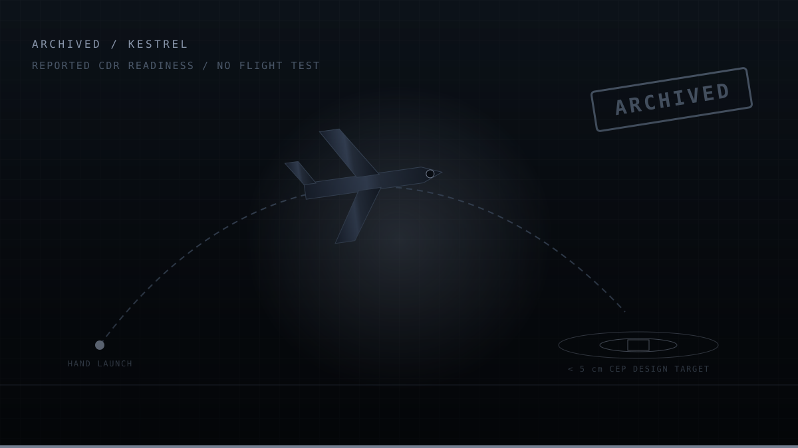

Home / Projects / PRJ-07 KESTREL
Project KESTREL
THROW-LAUNCH UAV · VISION-ONLY TERMINAL GUIDANCE · SUB-5 cm CEP TARGET
A hand-thrown autonomous UAV designed to recover to a marked pad with sub-5 cm circular error probable using vision-only terminal guidance. It reached CDR readiness and was then closed out. This page is the closeout, not a highlight reel.

01Problem
A small UAV that can be thrown by hand and recovered to a precise, pre-marked point without GNSS has obvious utility: no launch equipment, no runway, no dependence on a satellite constellation that may not be available. The difficulty is entirely in the terminal phase. GNSS-quality position is metres; the requirement here was centimetres, which means the last few seconds have to be flown on vision.
Problem statement. Recover a hand-launched UAV to a marked landing pad with sub-5 cm CEP, using vision as the sole terminal position reference.
02Requirements
| ID | Requirement | Value | Verification |
|---|---|---|---|
| KS-001 | Landing accuracy shall meet the precision target | < 5 cm CEP | Flight test campaign |
| KS-002 | Launch shall require no ground equipment | Hand throw | Demonstration |
| KS-003 | Terminal guidance shall not depend on GNSS | Vision only | Inspection + test |
| KS-004 | Transition from launch to stable flight shall be autonomous | Throw detection | Flight test |
| KS-005 | Autopilot shall be a flight-proven platform | Pixhawk 6C | Selection review |
03Design approach
A vision-only extended Kalman filter provided the terminal position reference, fusing pad-relative visual measurements with inertial propagation on a Pixhawk 6C flight controller. The launch transient, a hand throw imparts a large, poorly characterised initial rate, was treated as a distinct flight phase with its own detection logic and recovery mode rather than as an edge case of normal flight.
| Autopilot | Pixhawk 6C |
|---|---|
| Terminal navigation | Vision-only EKF, pad-relative |
| Launch mode | Throw detection with autonomous stabilisation recovery |
| Accuracy target | < 5 cm CEP at touchdown |
| Maturity reached | CDR readiness |
04Status at closeout
- Requirements set defined with verification methods assigned.
- Vehicle configuration and avionics architecture defined and reviewed.
- Vision-only terminal guidance approach designed and analysed.
- Design package advanced to CDR readiness.
- No flight test campaign executed, the programme closed before hardware qualification.
The sub-5 cm CEP figure is a design target that was never flight-demonstrated. It is reported here as a requirement, not as a result, and it should not be read as one.
05Why it stopped
KESTREL was archived because its most valuable technical content, vision-only terminal guidance in the absence of GNSS, was a strict subset of a more general problem, and pursuing the more general problem was the better use of the time. GHOST addresses GPS-denied state estimation with occlusion tolerance and a target track, on hardware that is easier to iterate on than a throw-launched airframe.
Continuing KESTREL would have meant building an airframe and a flight-test campaign to demonstrate a navigation capability that could be demonstrated more directly, and more rigorously, on a bench. That is a scope decision, and it is worth stating as one rather than letting the project quietly go stale.
06Lessons learned
- Separate the hard part from its packaging. The interesting engineering was the estimator; the airframe was a delivery mechanism that carried most of the schedule risk.
- A design target is not a result. Numbers that have not been measured should be labelled as requirements every time they are quoted.
- Killing a project is a legitimate engineering decision. The failure mode is not stopping, it is continuing out of sunk cost.
- Treat transients as phases. Designing an explicit throw-detection and recovery mode was more robust than trying to make the nominal controller tolerate the launch transient.
- Write the closeout. A project without a closeout leaves its lessons undocumented and its status ambiguous.
07What carried forward
The vision-only navigation work went directly into GHOST: the same problem of maintaining an accurate position estimate without GNSS, using a single camera and an IMU, with the pad-relative fiducial approach generalised into AprilTag-based absolute pose fixes. The error-state formulation, the χ² gating discipline, and the insistence on filter consistency rather than raw accuracy all originated here.